|
|
| sea anemones text index | photo index |
| Phylum Cnidaria > Class Anthozoa > Subclass Zoantharia/Hexacorallia > Order Actiniaria |
| Magnificent
anemone Heteractis magnifica Family Stichodactylidae updated July 2024
Where seen? This stunning, large anemone is well named. It is seen on our Southern shores, attached to large boulders of dead coral or other solid objects. It is rarely buried in sand or sediments. Several of these anemones may be found next to one another. The anemone was previously known as Radianthus ritteri. Features: Diameter when expanded 30-50cm, but can reach 1m. Body column uniformly coloured. Those seen were white, pink, maroon, purple. The body column has longitudinal rows of translucent verrucae of the same colour or slightly lighter or darker than the body column. Long tentacles (5-8cm) densely cover the oral disk. The tentacles are finger-like and do not taper. The tips are blunt or slightly swollen. The lower part of the tentacles are usually the same colour as the oral disk. Tips may be yellow, green or white. It is said that the mouth area of 2-3cm in the centre of the oral disk is usually yellow, brown or green and the mouth is often raised so it sits on a cone. But this has not been observed for those seen at low tide. The animal can tuck all its tentacles into its body column, forming a ball-shape with only tufts of tentacles sticking out in the centre. Sometimes confused with other large sea anemones and similar large cnidarians. Here's more on how to tell apart large sea anemones with long tentacles and large 'hairy' cnidarians. |
 Kusu Island, May 04 |
 Long tentacles densely cover the oral disk. |
 The animal can tuck its tentacles The animal can tuck its tentacles into its body. |
|
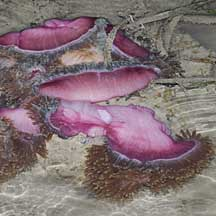 Pulau Hantu, Jan 10 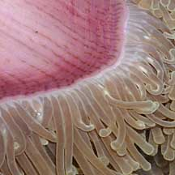 |
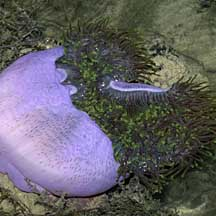 Pulau Hantu, Feb 08 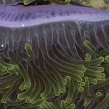 |
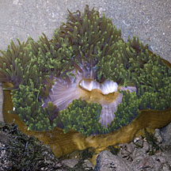 Terumbu Pempang Tengah, Apr 12 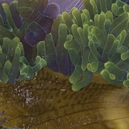 |
| Magnificent friends: The
Magnificent anemone harbours symbiotic algae (called zooxanthellae)
that photosynthesize. The algae share the food produced with the anemone,
which in turn provides the algae with shelter and minerals. Several kinds of animals may live happily among and unharmed by the tentacles of the Magnificent anemone. These include Anemone shrimps like the Peacock-anemone anemone shrimp (Periclimenes brevicarpalis) and fishes such as Dascyllus trimaculatus and anemonefishes including A. akallopisos, A. bicinctus, A. clarkii, A. nigripes, A. ocellaris (Clown anemonefish), A. percula, A. perideraion, A. xanthurus. |
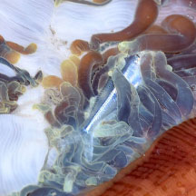 A small fish caught in its tentacles. Kusu Island, Dec 18 Photo shared by Loh Kok Sheng on facebook. |

| Masses of Magnificence: These anemones is sometimes seen in clusters of many individuals crammed together. Such clusters probably form when the anemone reproduces asexually - one anemone splits into fragments, and each fragment develops into a full sized clone, identical to the original. That is probably why the anemones crammed together in a cluster usually have body columns of the same colour. |
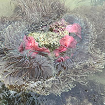 Beting Bemban Kecil, Jul 25 Photo shared by Kelvin Yong on facebook. |
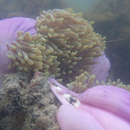 Sea anemone in the process of cloning itself! Pulau Hantu, Jul 20 Photo shared by Dayna Cheah on facebook. |
| Magnificently Tough: During mass coral bleaching in 2010 and 2016, they were not seen to be bleaching. But during the 2024 global mass coral bleaching, a few were seen bleaching or stressed. The majority, however, seemed normal. Status and threats: As at 2024, it is assessed not to be approaching the criteria for being listed among the threatened animals in Singapore. |
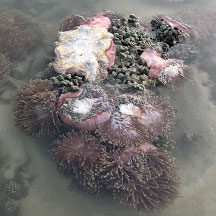 One beaching among normal. Pulau Semakau (East), Jul 24 Photo shared by Shawne Goh on facebook. |
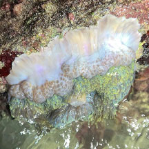 During global mass coral bleaching. Kusu Island, Aug 24 Photo shared by Kelvin Yong on facebook. |
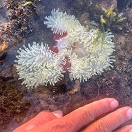 During global mass coral bleaching. Pulau Semakau (North), Jul 24 Photo shared by Kelvin Yong on facebook. |
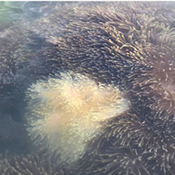 One bleaching in a cluster of many anemones. Sentosa Serapong, Jul 25 Photo shared by Che Cheng Neo on facebook. |
| Magnificent anemones on Singapore shores |
On wildsingapore
flickr
|
| Other sightings on Singapore shores |
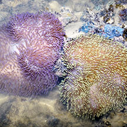 |
Links
|